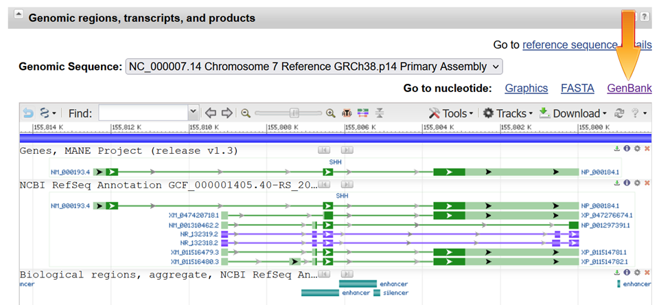

If you want to design primers around exons or SNPs, you need a
GenBank annotated genome sequence
that contains enough flanking around your gene.
Below is a simple way to do it in five steps using
NCBI's gene browser.
| 1. Fill in the gene name and press Search. | |
| 2. Scroll down to the Results section and click on the link. | |
| 3. Scroll down to the Genomic regions, transcripts, and products section and select the GenBank link. | |
|  | |
| 4. On the next page, change the genome coordinates by about 1000
to give the primer program some flanking sequence around the first and last exon. Select Update View. | |
| 4. Finally, select Send To, and Create File | |